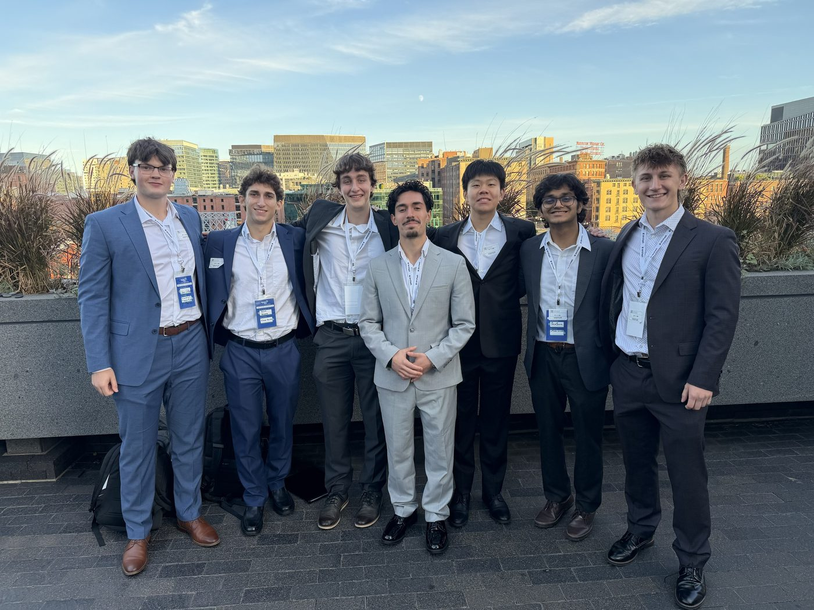
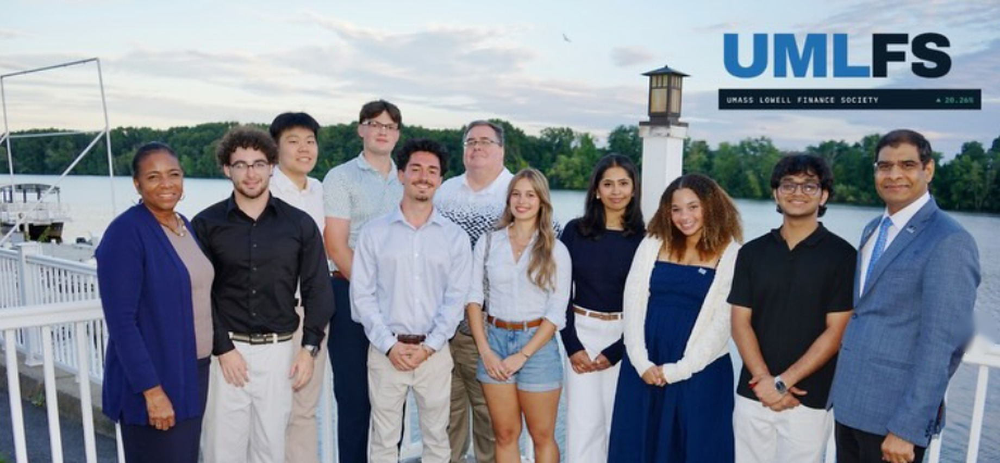
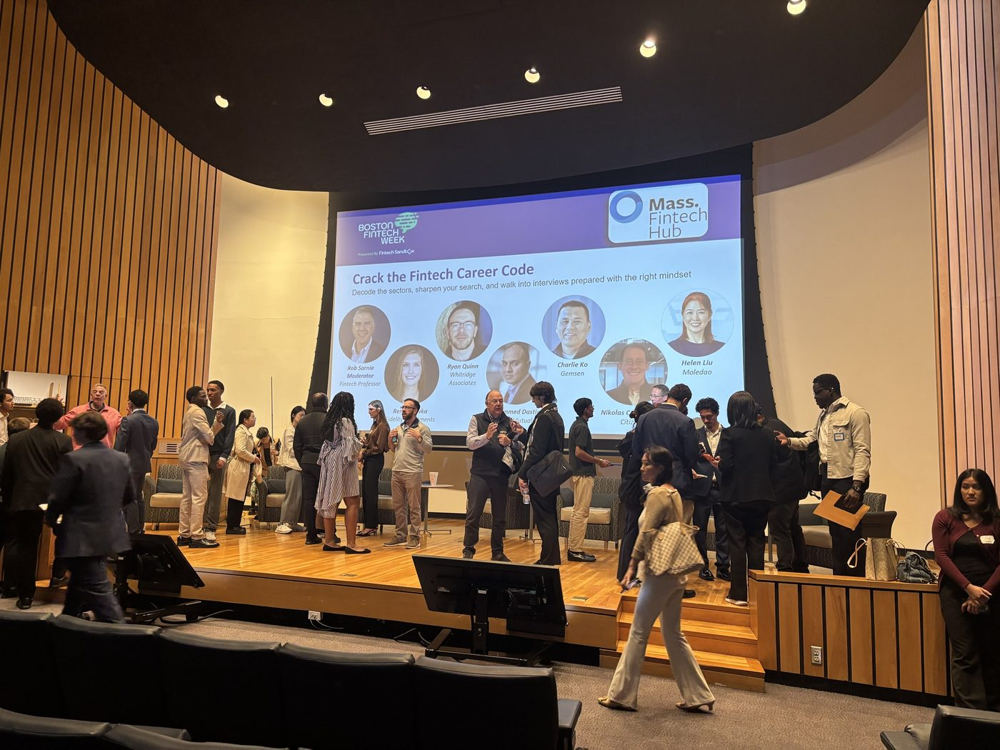
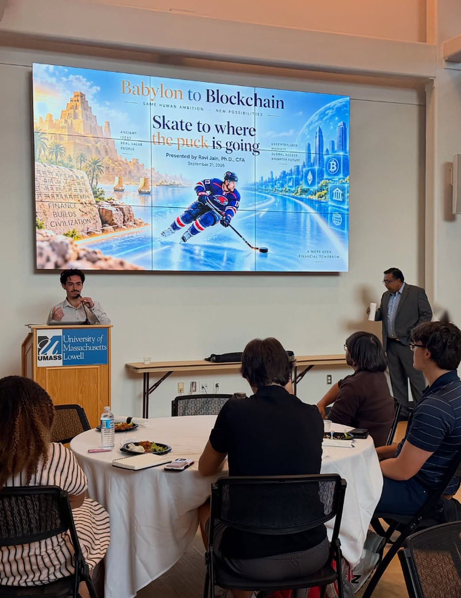
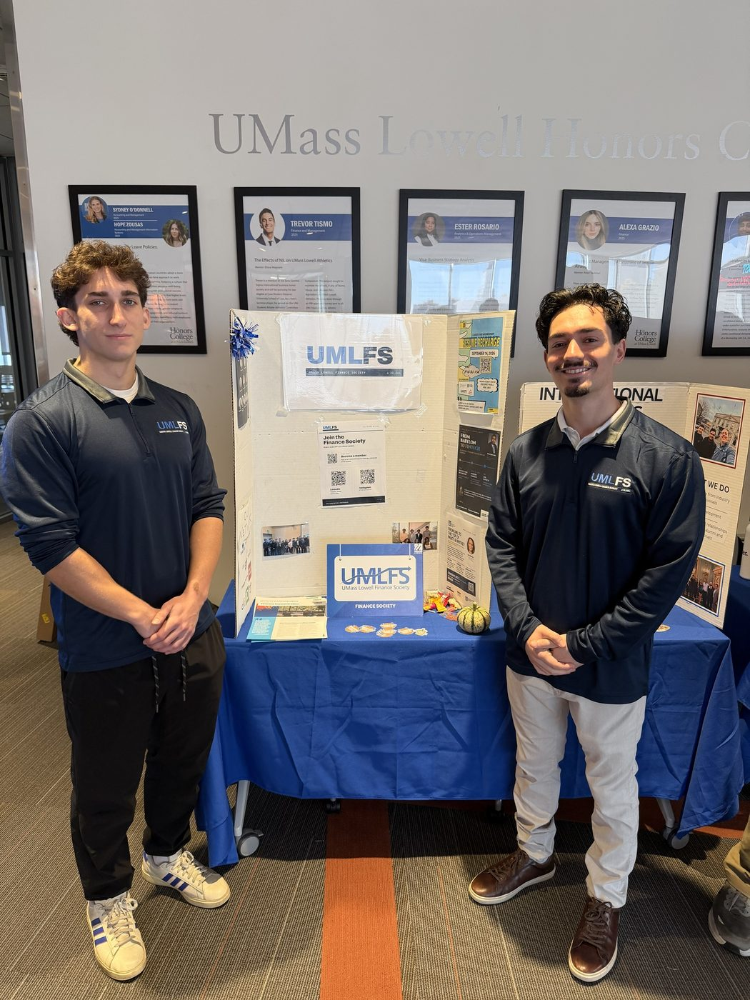
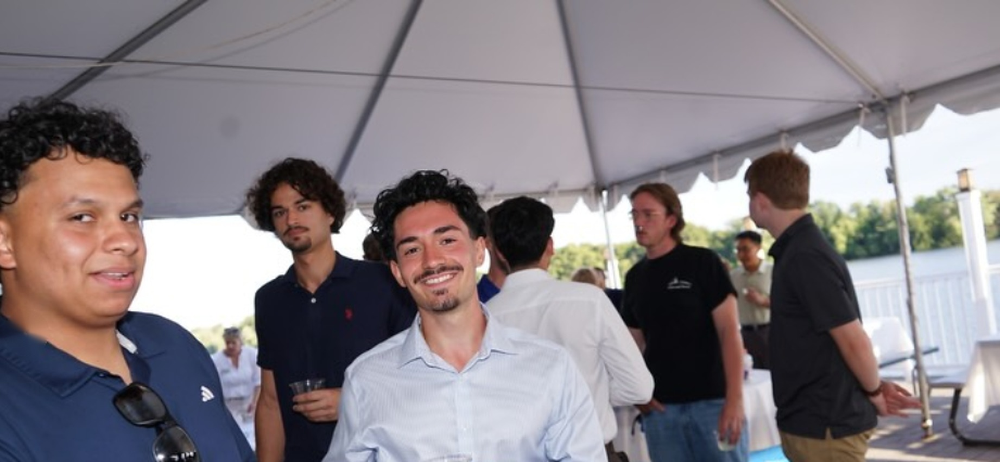
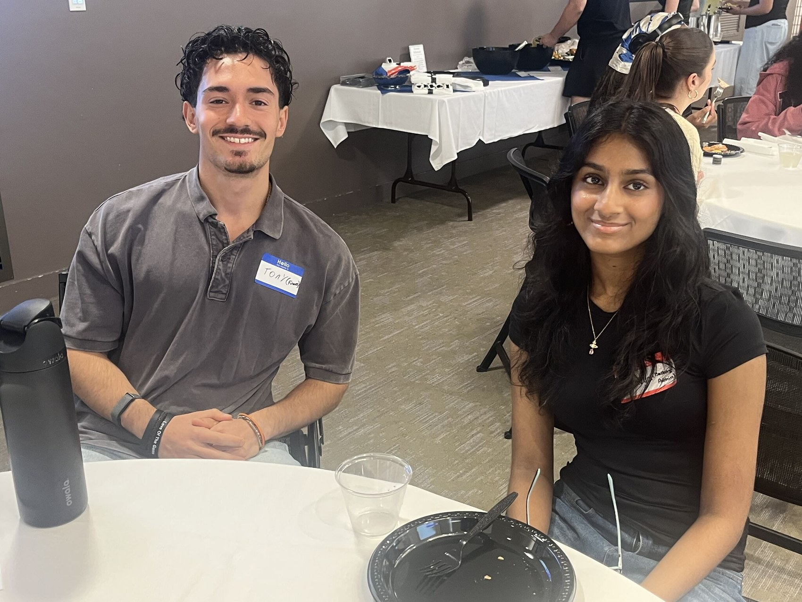
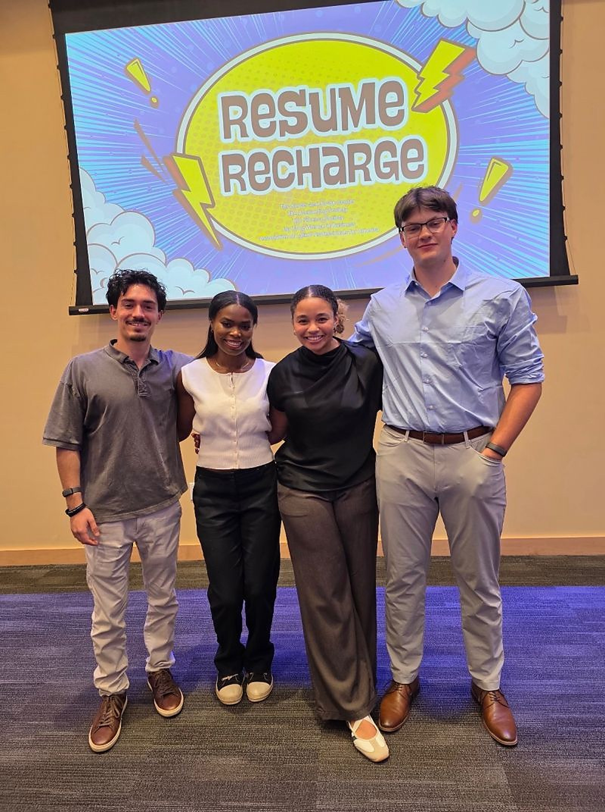
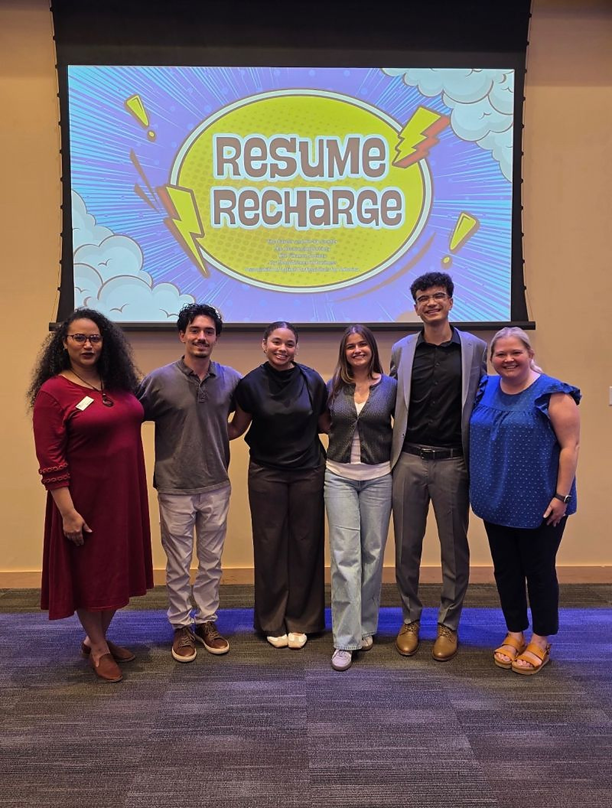

UML Finance Society.
I lead a nine person executive board for a student finance club of over 500 members.
500 members, a nine person board and well attended events
I became president in April 2026. Membership has grown by 200+ to over 500. The e-board has nine members, and each is responsible for an area such as events, merchandise, partnerships or the newsletter. My role is largely to choose the right people and give them room to do the work.
Six events in six weeks
- September 21. From Gold to Tokens, with Professor Ravi Jain and the Donahue Center for Business Ethics. The talk covered the history of money from Babylon to AI, with Chipotle provided, and was open to every major.
- September 22. Boston Fintech Week at the Federal Reserve Bank of Boston. Ten of us attended the opening day, on a school shuttle that I arranged for the dean's office to fund.
- September 25. The Fintech That Thinks career summit at the Boston Fed, open to all finance students on a second bus.
- October 1. Develop Your Corporate Financial Acumen with Kim Kinsley of Pratt & Whitney, co-hosted with the DifferenceMaker Institute.
- October 28. Link Up, a LinkedIn workshop in the Bloomberg Terminal room, held jointly with the Real Estate Club. It offered free headshots, a talk on how to set up a profile and live reviews of members' profiles on the screen.
- Fall. The Bloomberg Global Trading Challenge, with practice time booked in the terminal room.
An analyst group the next board runs
The group produces a weekly market newsletter and a case every three weeks. It is run by the two youngest e-board members and has four new analysts, and the top case team is recognized on LinkedIn. The aim is to give members who want an e-board seat a way to earn one, and to ensure the club does not depend on whoever is president.
This fall so far

The group on the roof of the Federal Reserve Bank of Boston on the opening day of Boston Fintech Week, September 22. 
Another rooftop shot from Boston Fintech Week. 
The group at a Finance Society event by the water. 
Crack the Fintech Career Code, the student panel at the Boston Fed. 
Opening the evening, which covered Babylon to blockchain in 75 minutes, with Chipotle. 
Babylon to Blockchain, presented by Professor Ravi Jain, September 21. I opened the night. 
The involvement fair table in the Honors College, with the Resume Recharge and Babylon flyers. 
Members at a Finance Society event. 
At a Finance Society event with a member. 
A guest speaker session with Bob Landry, CFA, CAIA, Senior Director, Investments and Retirement at H-E-B. 
With Professor Ravi Jain and the Donahue Center team before From Gold to Tokens, September 21.



Resume Recharge, with the Finance Society among the hosts. 
Resume Recharge, with the Finance Society and campus partners.


Getting members in rooms they could not get into alone
I am working to bring UMass Lowell into the Mass Fintech Hub so that the Boston Fintech Week tickets become an annual arrangement. I am also in contact with CFA Society Boston about access to their events for members, and I am arranging alumni site visits, starting with a trip to New York.